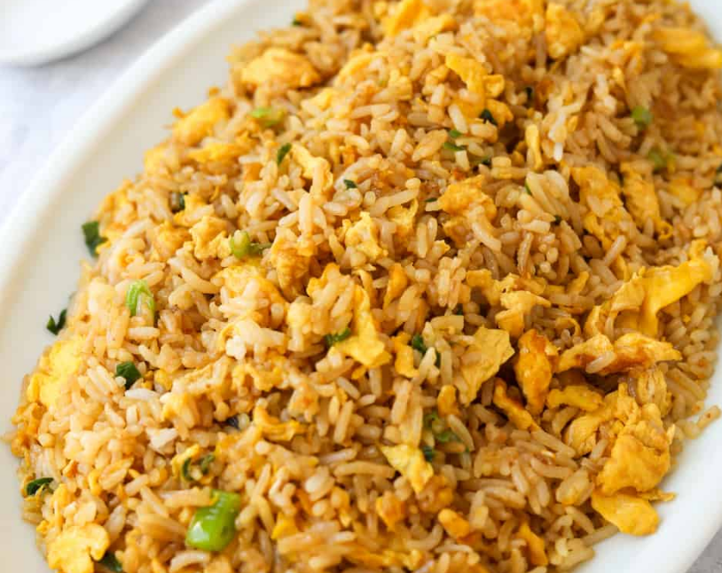

Egg fried rice

Description
Fried rice is a dish of cooked rice that has been stir-fried in a wok or a frying pan and is usually mixed with other ingredients such as eggs, vegetables, seafood, or meat. It is often eaten by itself or as an accompaniment to another dish.
Ingredients
- 2 tbsp peanut oil
- 5 garlic cloves, smashed
- 1 Shallot, sliced from the middle
- 1 Egg + 1 Egg Yolk
- 1 spring onion, sliced
- 1 Red Chili, sliced
- 4 Cups chicken flavoured (or white) rice (day old rice is best)
- 2 tbsp Soy sauce
- 2 tbsp Asian Sesame Oil
- 1/2 tbsp MSG (monosodium Glutamate)
Steps
- Cook the chicken flavored rice according to the package.
- Whisk the egg and egg yolk in a bowl and set aside.
- Coat a wok pan with peanut oil and heat over medium. Once it starts smoking, throw the excess off.
- Add garlic and shallot. Fry it for 3 minutes.
- Add eggs and stir until it's almost solid.
- Add the cooked rice and mix it with everything.
- Add the soy sauce and sesame oil. Flatten it into the rice with the back of the spoon.
- Add the MSG, spring onion, and chili and mix everything in the wok to combine.